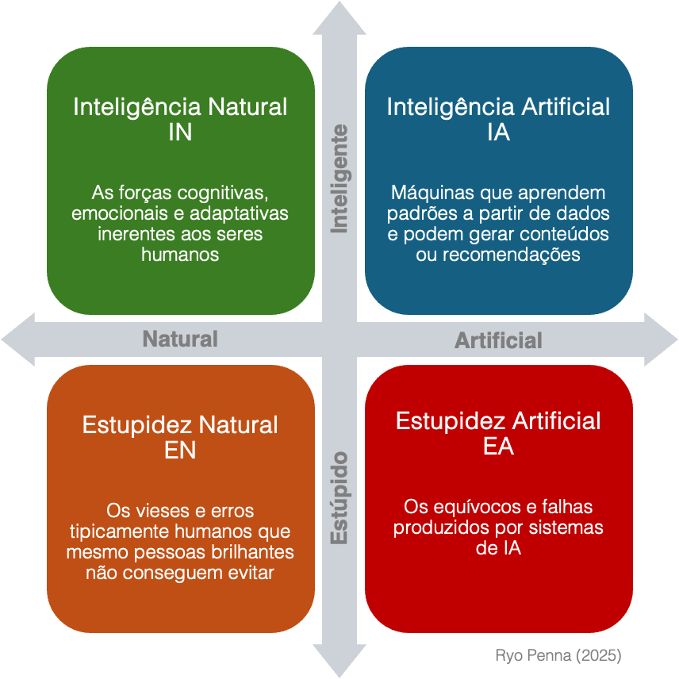

IA, Estupidez e os Quatro Quadrantes da Inteligência: Um Guia Prático para Líderes
2025-03-06
“Estamos afogados em informação, mas famintos por sabedoria.” — E. O. Wilson
Um alerta do mundo real
Imagine que você acabou de lançar um chatbot de IA para o seu atendimento ao cliente. No começo, ele funciona que é uma beleza: responde na hora, é supereducado e nem reclama de horas extras. Só que, depois de um mês, começam a surgir interações bizarras — como indicar produtos aleatórios, citar termos de políticas que nunca existiram e dar respostas completamente contraditórias. Você não programou nada disso, então por que está acontecendo?
O motivo: dados problemáticos aliados à falta de supervisão. O chatbot foi treinado em bibliotecas de conteúdo “meia-boca” e, além disso, usou dados de usuários cheios de informação incorreta. Ou seja, a receita perfeita para a IA “sair dos trilhos” — e é por isso que precisamos de um modelo para entender como a inteligência e a estupidez, tanto humana quanto de máquina, podem se chocar.
Quando falamos de “inteligência”, geralmente pensamos em aprender, raciocinar, resolver problemas e se adaptar. Mas inteligência não é tudo; o outro lado — erros, julgamentos equivocados e fiascos — também merece atenção. Hoje, não estamos lidando só com a inteligência (e a burrice) humanas, mas também com seus equivalentes artificiais.
Pensando nisso, apresento a MATRIZ SAPIENT :

Os quatro quadrantes: Visão geral
Vamos explorar como se combinam as criações geniais e as besteiras do mundo humano — e suas contrapartes de máquina.
Quadrante 1: Inteligência Natural (IN)
O que é : Capacidades cognitivas, emocionais e de adaptação que só os humanos têm.
Como é : Pense em um detetive que consegue ligar pistas que ninguém mais vê, um empreendedor que enxerga tendências além das planilhas ou um professor que sente quando um aluno está com problemas emocionais.
Ponto forte : Pessoas são ótimas em ler sinais sociais sutis, reformular problemas complicados e usar empatia para lidar com situações incertas — habilidades que a IA ainda não domina.
Exemplo real : Numa crise (tipo um grande recall de produto), um líder experiente consegue “ler o ambiente”, acalmar a equipe e mudar a estratégia na hora. Isso é IN: enxergar o todo e responder com lógica e empatia.
Quadrante 2: Estupidez Natural (EN)
O que é : Vieses e erros humanos que até gente brilhante comete — pensamento de grupo, autoengano, decisões impulsivas movidas pelo ego ou insistir numa estratégia que já deu errado só por orgulho.
Como é : Imagine uma diretoria ignorando sinais de alerta porque “sempre foi assim”. Ou funcionários com medo de questionar um projeto que está afundando, só para não “causar atrito”.
Armadilha : Teimosia, excesso de confiança e medo. Essa mistura leva pessoas bem-intencionadas a fazer julgamentos ruins — e, muitas vezes, esses erros ainda acabam virando parte da cultura ou da tecnologia da empresa.
Exemplo real : Aquela vez em que a empresa despejou dinheiro num projeto fadado ao fracasso, só porque ninguém quis contrariar o chefe. Isso é EN em grande escala.
Quadrante 3: Inteligência Artificial (IA)
O que é : Máquinas que aprendem padrões de dados, detectam anomalias, fazem previsões e às vezes geram conteúdo ou sugestões.
Como é : A IA pode analisar milhões de exames médicos mais rápido que um exército de médicos, prever problemas na cadeia de suprimentos ou até compor música no estilo de um compositor famoso.
Oportunidade : Velocidade, consistência e escalabilidade — quando bem direcionada. A IA nos livra de tarefas repetitivas e pode abrir caminhos para inovações em pesquisa, desenvolvimento de produtos e solução de problemas.
Exemplo real : Desde algoritmos que vencem humanos no xadrez até carros que dirigem sozinhos em microssegundos de reação, é inegável que a IA tem força para transformar setores inteiros.
Quadrante 4: Estupidez Artificial (EA)
O que é : Falhas e derrapadas de sistemas de IA, geralmente por causa de dados ruins, objetivos mal definidos ou falta de barreiras de segurança.
Como é : Um algoritmo de ações que derruba seu portfólio porque interpretou errado um sinal raro do mercado, ou um modelo de linguagem que cita fontes que nem existem.
Alucinação : Modelos de texto em grande escala podem “inventar” respostas quando os dados são incompletos ou contraditórios. Soam confiantes, mas estão basicamente “chutando”.
Risco : A IA pode espalhar erros na velocidade da luz. Um pequeno viés ou falha em seu conjunto de dados pode gerar um desastre global quando o sistema começa a rodar pra valer.
Exemplo real : Um software de recrutamento que exclui candidatos qualificados porque “aprendeu” com um histórico de contratações enviesado. Em uma noite, você perde talentos e ainda vira alvo de críticas por discriminação.
Dicas práticas para líderes: Um guia unificado
Os líderes costumam amar modelos e matrizes, mas querem saber: “Na prática, o que fazer com tudo isso?” Aqui vão ações concretas que valem para todos os quadrantes e ajudam a evitar desastres e aumentar o retorno sobre o investimento.
1. Exija transparência de dados
Por que : EN e EA caminham juntas quando vieses humanos contaminam o banco de dados, que depois a IA replica e amplia.
Sua tarefa : Antes de lançar qualquer projeto de IA, faça auditorias detalhadas nos dados. Pergunte de onde vêm, quem rotulou, onde podem estar enviesados ou incompletos. Ser transparente desde o começo evita escândalos depois.
2. Dê voz aos que discordam
Por que : EN floresce quando não há espaço para ceticismo. Muitos fiascos de IA passam batido porque as equipes são “educadas demais”.
Sua tarefa : Tenha um “chefe cético” (formal ou informal) que questione tudo: qualidade de dados, prazos, objetivos. Um pouco de debate interno pode impedir grandes erros lá na frente.
3. Junte julgamento humano e precisão da máquina
Por que : A IA tem a capacidade de processar enormes volumes de dados, mas pode carecer do contexto e da intuição que somente o olhar humano oferece. Assim como a técnica RAG (Retrieval-Augmented Generation) , que combina o conhecimento previamente aprendido com a consulta ativa a fontes confiáveis para validar e complementar suas respostas, integrar o julgamento humano com as análises automatizadas resulta em decisões mais sólidas e seguras.
Sua tarefa : Em decisões críticas, permita que especialistas revisem e interpretem os alertas e insights gerados pelos algoritmos—tal como o RAG assegura que o robô “amigo” tenha acesso às informações mais atuais e precisas.
4. Mantenha um ciclo constante de feedback
Por que : Sistemas de IA precisam de atualizações frequentes para não perpetuarem erros ou vieses. Pense na técnica R2L (Right-to-Left) : uma simples mudança na forma de dividir os números—priorizando os dígitos mais relevantes—transformou a precisão dos cálculos (de 75% para quase 98%). Da mesma forma, manter um ciclo contínuo de feedback permite ajustar os modelos conforme surgem novos dados ou mudanças no ambiente, garantindo a eficácia e a acurácia da IA ao longo do tempo.
Sua tarefa : Implemente revisões periódicas e ajustes iterativos no sistema. Se identificar desvios ou a necessidade de atualizar informações, reavalie os dados e re-treine o modelo para que ele se mantenha alinhado com a realidade.
5. Diversifique sua equipe
Por que : A IN se fortalece (ou se limita) pelos diferentes pontos de vista de quem constrói a IA.
Sua tarefa : Não foque só em cientistas de dados. Chame especialistas em comportamento, profissionais de ética, pessoas com experiência no mercado, além de funcionários de linha de frente que conhecem os desafios dos usuários. Mais diversidade = menos pontos cegos.
6. Valorize a curiosidade em vez da simples obediência
Por que : EN costuma surgir quando todo mundo tem medo de desafiar o status quo, e a EA aparece quando não há aprendizado contínuo.
Sua tarefa : Eleve o nível das discussões questionando premissas e incentivando novas ideias. Se a cultura corporativa penaliza a curiosidade, você vai continuar lançando IA com falhas que ninguém ousa apontar.
7. Mantenha a humildade com uma mentalidade iterativa
Por que : Excesso de confiança em IA leva direto à EA. Excesso de confiança na nossa própria inteligência leva direto à EN.
Sua tarefa : Teste regularmente seus sistemas (e as suas próprias certezas). Faça “simulações de desastre de IA”, onde a equipe tenta causar erros ou achar vieses no modelo. Cada descoberta vira uma chance de aprendizado, e não motivo de pânico.
O Fator Humano: Convertendo Diálogo em Resultados Concretos
Além de verificações sistemáticas e atenção rigorosa aos dados, existe outro aspecto fundamental. Quando a comunicação é efetiva — mantendo um alinhamento consistente de objetivos, explorando diversos pontos de vista e ajustando rotas com base em feedback imediato — equipes acessam um nível mais profundo de clareza e agilidade. Esse fator protege tanto a organização quanto os resultados financeiros.
Valorizando o Poder da Conexão e do Alinhamento
Sempre que você reúne as pessoas para analisar desafios e cocriar soluções, diminui as chances de detalhes passarem despercebidos, de falhas de comunicação ou de viés oculto. Esse tipo de alinhamento costuma revelar ângulos inéditos que ninguém perceberia sozinho. A longo prazo, encurta os ciclos de projetos e evita retrabalhos onerosos que estouram orçamentos.
Recomendações Práticas para Conversas Produtivas
1. Quanto Mais Ouvimos, Mais Aprendemos
A inovação dificilmente nasce num vácuo. Ela se desenvolve numa cultura de curiosidade — tanto em relação aos entregáveis quanto aos propósitos, preocupações e contextos das pessoas. Ao ouvir de forma aberta, você identifica pontos cegos e acende ideias que só dados não conseguem revelar.
2. As Conversas São o Trabalho
Se a sua equipe não domina conversas focadas em alinhamento, ação e resultados, ela corre o risco de ser superada pela IA. Máquinas são ótimas em executar tarefas, mas nós, humanos, somos insubstituíveis no diálogo. Invista continuamente no aprimoramento de habilidades — fazer perguntas melhores, fornecer feedback mais claro — para manter a inteligência coletiva da organização à frente das soluções automatizadas.
3. Accountability Significa Comprometimento em Vez de Só Conformidade
O verdadeiro accountability é baseado em comprometimento. Quem age pela conformidade e compliance faz o mínimo. Já quem se compromete extrapola os resultados básicos. Alinhe objetivos comuns para que cada pessoa veja suas responsabilidades como algo significativo, e não apenas imposto.
4. Não Existe Fator Humano Sem Reconhecimento
Todos nós crescemos mais a partir de nossas forças do que de nossas fraquezas. Ao reconhecer a contribuição autêntica de cada um — em vez de elogios superficiais — você eleva moral, engajamento e desempenho. Esse tipo de apreciação cria um clima favorável, onde todos se sentem livres para testar ideias e aperfeiçoá-las de forma rápida.
Uma Vantagem Competitiva Que Se Converte em Resultado
Ao integrar uma conexão genuína ao dia a dia, as organizações veem o desperdício cair: menos retrabalho, menos indecisão e menos conflitos estéreis. Isso não apenas protege as finanças, mas aumenta a lucratividade. Os projetos tendem a cumprir prazos, ficar abaixo do orçamento e satisfazer os envolvidos. Melhor ainda: as equipes permanecem ágeis — identificando riscos mais cedo e impulsionando a inovação com mais rapidez do que concorrentes atolados em burocracia ou acomodados em relação ao potencial da IA.
Por que isso é urgente
As empresas vivem sob a pressão de “inovar ou morrer”. Mas inovar não é algo automático; é um processo humano, que exige criatividade e cautela. Se você adota IA sem entender como a Inteligência Natural e a Estupidez Natural influenciam seus resultados, arrisca criar uma bomba-relógio — que pode colocar em risco o seu mercado, a confiança que o público deposita em você e até seus melhores talentos.
“A questão de um computador pensar ou não é tão relevante quanto a de um submarino saber ou não nadar.” — Edsger Dijkstra
O futuro da IA depende dessa interação entre a genialidade humana, as falhas humanas, a eficiência das máquinas e os deslizes das máquinas. Ao reconhecer esses quatro quadrantes — Inteligência Natural, Estupidez Natural, Inteligência Artificial e Estupidez Artificial —, o líder consegue navegar rumo a um cenário mais positivo, sem cair em grandes armadilhas.
Não basta adotar IA — é preciso ajustar a cultura, a governança e as práticas de dados para garantir responsabilidade no uso. Isso significa trazer transparência, ceticismo, colaboração e humildade para o DNA da empresa.
Se você estiver disposto a encarar esse desafio — enfrentando vieses, ouvindo vozes diversas, auditando seus dados e mantendo humanos no comando — vai perceber que a IA não só complementa a sua estratégia, mas a transforma. E abre novas frentes para o seu negócio e para a sociedade como um todo.
Coloque em prática
Compartilhe este modelo com seu time para iniciar conversas sobre adoção responsável de IA.
Reflita sobre possíveis pontos cegos em dados, cultura interna e tomada de decisões.
Aja de acordo com as dicas — porque o caminho da inteligência para a estupidez, seja humana ou de máquina, é muito curto se não ficarmos atentos.
Por mais que a tecnologia avance, a verdadeira vantagem competitiva está na capacidade de a equipe ter as conversas certas na hora certa, juntando a sensibilidade humana com a eficiência das máquinas — enquanto permanece alerta contra qualquer forma de estupidez, antiga ou nova.